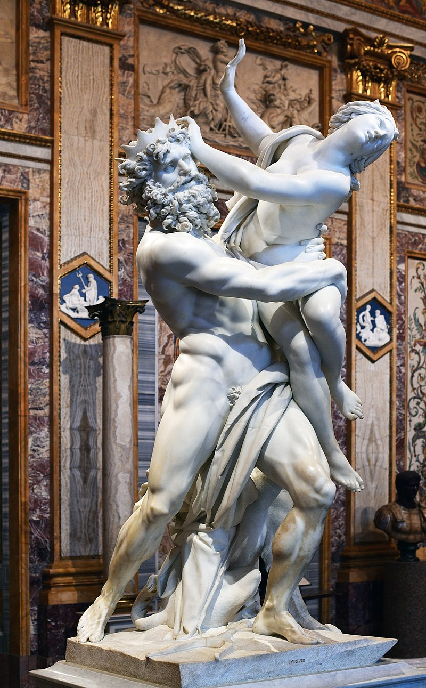

Gian Lorenzo Bernini
Adapting the classical grandeur of Renaissance sculpture and the dynamic energy of the Mannerist period, Bernini forged a new, distinctly Baroque conception for religious and historical sculpture, powerfully imbued with dramatic realism, stirring emotion and dynamic, theatrical compositions. Bernini's early sculpture groups and portraits manifest "a command of the human form in motion and a technical sophistication rivalled only by the greatest sculptors of classical antiquity." Moreover, Bernini possessed the ability to depict highly dramatic narratives with characters showing intense psychological states, but also to organize large-scale sculptural works that convey a magnificent grandeur.
